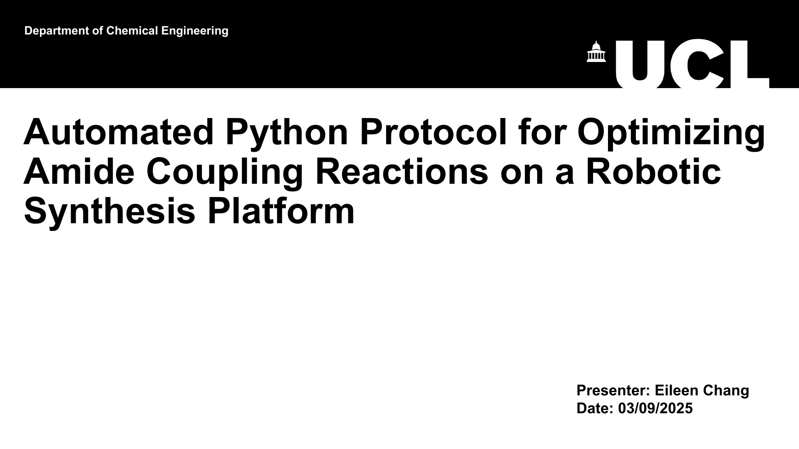

Engineering & data analysis
Eileen
Chang.
Currently based in London, I use data to understand all kinds of topics, from material manufacturing to business performance.
Explore my projects ↘About me.
My first question about a dataset is usually how the measurements were made.
Video essay
How exposed is work to AI?
I unpack what Anthropic means by “observed exposure” and how actual use of AI at work informs the debate about jobs.
Watch on YouTube ↗
Research presentation
Acrylamide Synthesis
My presentation explores research motivation, methodology, and some findings in acrylamide synthesis.
Selected projects.
Nanocluster data analysis
Mapping the electronic and energetic properties of 60,553 structures with principal component analysis.
Acrylamide synthesis transformation pipeline
Preparing acrylamide synthesis data for analysis.
Inside the tablet press
Reading ten sensor measurements together to investigate the relationship between production and waste.
COVID-19 in SQL
Querying daily records to trace UK cases and deaths and compare vaccine rollouts across countries.
A local AI assistant
Routing a prompt to conversation, climate-note retrieval or a code edit with LangGraph and Ollama.
Customer shopping behaviour
Cleaning retail data in Python and comparing customer segments in PostgreSQL and Power BI.